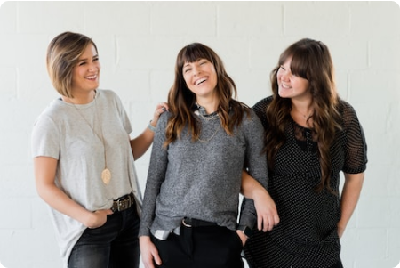

Median
Cari Median
Semua Bacaan

F
Teknologi
F
Media
F
Pengembangan Diri
F
Desain
F
Budaya
F
Dunia
F
Pendidikan

09 Jun 2023
Internet of Things (IoT) dan Masa Depan Keterhubungan
dalam Kehidupan Sehari-hari
Kristin Watson
F
Media
02 Jun 2023
Mengembangkan Keterampilan Berpikir Kritis melalui
Pendidikan: Strategi dan Implementasi di Kelas
Cameron Williamson
F
Media
15 Agu 2023
Inovasi Teknologi Big Data: Menggali Wawasan dan
Mendukung Pengambilan Keputusan yang Efektif
Arlene McCoy
F
Media
27 Mar 2023
Desain Interior Ramah Lingkungan: Pendekatan Green
Design dalam Menciptakan Ruang yang Berkelanjutan
Chance Vaccaro
F
Media
23 Jan 2023
Pendidikan Karakter: Membangun Nilai-Nilai Etika dan
Moral pada Anak-anak
Darrell Steward
F
Media
13 Apr 2023
Peran Penting Kepercayaan Diri dalam Pengembangan
Pribadi dan Profesional
Savannah Nguyen
F
Media
Bacaan Populer
#1
27 Feb 2023
Mendekati AI yang Mampu Belajar Sendiri:
Pengembangan Algoritma Pembelajaran Mesin yang
Efektif
Rochel Foose
#2
16 Des 2022
Perkembangan Terbaru dalam Teknologi 5G: Masa Depan
Koneksi Internet yang Lebih Cepat dan Andal
Wade Warren
#3
05 Jan 2023
Dampak Stres pada Kesehatan Mental dan Strategi
Mengelolanya dalam Kehidupan Sehari-hari
Eduardo
Rekomendasi Penulis
Aurellio
Max
Theresa Webb